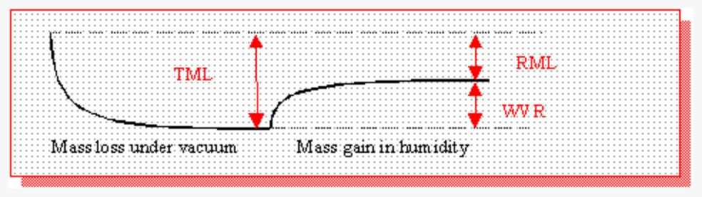

Ref : http://www.aac-research.at/products/products_AAC_SpaceTesthouse_Outgassing_en.html
http://www.drb-mattech.co.uk/aerospace.html


CVCM : Collected Volatile Condensible Material is the mass gain of the collector plates divided by the initial mass of the material
RML : Recovered Mass Loss is the difference between initial mass and mass after re-climating (shows the amount on non-water products)
TML :Total Mass Loss is the difference of mass directly before and after vacuum test (shows the amount of all outgassing products in percentage of initial mass)
WVR :Water Vapour Regained is the amount of water uptake after vacuum test